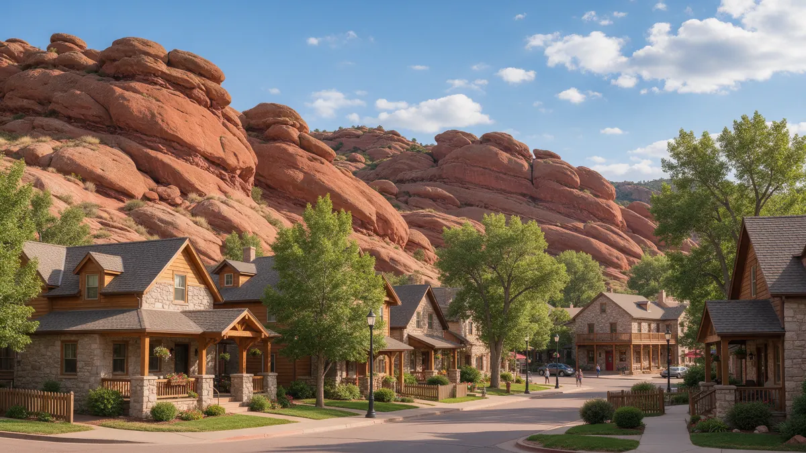

Plumber Morrison CO: A Foothills Homeowner Handbook

Finding a plumber in Morrison CO can be tricky when a leak hits a home tucked behind the hogback, up toward Indian Hills or down a canyon road. This handbook helps you take the right first steps, notice the signs and prepare for the visit. Plumbing Pros Colorado is a referral line, and callers are connected with independent plumbers who handle the work themselves.
Where to start when water appears
Shut off the main valve, then open a low faucet. If your home uses a well, switch off the pump breaker as well. If you rent or share a driveway or water line with a neighbor, let them know right away.
Take photos and mark the wet areas with painter's tape. If the problem is outside, such as a soggy slope above the house, note where it is and whether it changes through the day.
If a pipe is spraying near electrical equipment, turn the main off first and avoid contact until it is safe.
If you are away when the leak starts, call a neighbor or caretaker to shut the main while you arrange for the plumber, and let them know where the valve and any key are kept.
What hidden leaks look like in the foothills
- soft ground near a buried line
- well pump that runs often
- musty crawlspace
- low flow at a far faucet
- a damp wall on the uphill side
- drains that gurgle after rain
Rocky terrain around Dinosaur Ridge, Mount Falcon and the Hogback can shape how water moves, so a wet spot is not always where the pipe broke. Water may travel along rock or compacted soil before it surfaces.
Slope and rock mean water can run a long way before it appears, so note where you first saw dampness and how it changed.
How a plumber works through it
A plumber will confirm whether the system is city water or a well, then test pressure and inspect accessible lines. Where lines are buried, listening equipment can narrow the zone before anyone digs.
Access is a real factor in canyons and on steep driveways. Tell the plumber about narrow roads, gates or limited parking when you call so they can plan.
Tell the plumber whether the home is on a steep lot, since materials and equipment have to be carried in.
Septic and wells: asking the right questions
Many properties between Morrison, Idledale and Indian Hills rely on septic systems or wells. Ask whether the plumber handles those components or whether a septic or well specialist is the better fit.
Ask what to expect if a line needs replacement, and how the plumber will protect landscaping, rock work and drainage during the repair.
Ask whether a camera or locator can be used to limit excavation near rock, roots and mature trees.
Preparing a canyon-side home for the seasons
Spring snowmelt, summer storms and winter cold all test pipes differently. Keep gutters and drains clear, and know the route water takes across your lot.
In winter, insulate exposed pipes and know where the shutoff is. Highway 8 and C-470 are the usual routes in, so plan ahead before storms limit access.
Keep a small tool kit and flashlight near the main, since power can fail during storms.
Living behind the hogback
Morrison sits where Bear Creek leaves the foothills, with Red Rocks to the north and the hogback ridge nearby. Weather, rock and slope make this a place where plumbing problems rarely look the same twice.
Tourism and events also shape life here. Roads fill on busy summer evenings, so it is wise to give the plumber a practical window and describe the route in. Preparing for that simple logistics question can make a visit go smoothly.
Because help may take longer to arrive in canyon areas, it pays to prepare ahead. Know your shutoff, keep a flashlight and towels together, and save the referral line number in your phone. A few minutes of planning goes a long way when conditions turn rough.
After the work is done, ask what to watch for over the next few weeks. A repaired line should hold steady pressure, and any new damp spot or noise is worth reporting back to the plumber right away.
Frequently asked questions
How can I tell if my water comes from a well?
Look for a pressure tank and a pump, or check your bill. If you do not receive a water bill from a utility, ask your landlord or neighbors. Check hose connections and exterior spigots after cold nights, since canyon temperatures can drop sharply.
What should I do about water coming down a slope after rain?
That may be drainage, not plumbing. Watch whether the meter moves with everything off. A plumber can help separate the two. If your area has patchy phone service, share a landline or alternate contact when you call.
Is a septic smell an emergency?
A strong odor can mean a problem. Limit water use and have the system checked. Standing sewage or backups need prompt attention. Ask the plumber to note what the equipment found so you have a record.
Can plumbers reach steep driveways?
Access varies. Describe the road and driveway when you call so the match is practical. Smaller roads may need extra planning, so describe what a service vehicle will encounter.
Do you cover Kittredge or Evergreen?
The referral line works with independent plumbers around Jefferson County. Share your location when you call. Tell the plumber which side of the ridge you are on, as that affects routing.
Plumbing services in Morrison
- Water Leak Repair
- Emergency Plumbing
- Drain Cleaning
- Water Heater Services
- Sewer Line Repair
- Gas Line Services
- Slab Leak Repair
- Pipe Repair & Replacement
- Toilet Repair
- Bathroom Plumbing
Nearby Colorado cities
- Water leak repair in Denver
- Water leak repair in Evergreen
- Water leak repair in Boulder
- Water leak repair in Arvada
Ready to talk to someone? Call (720) 794-0974 or visit reach a Jefferson County plumber.